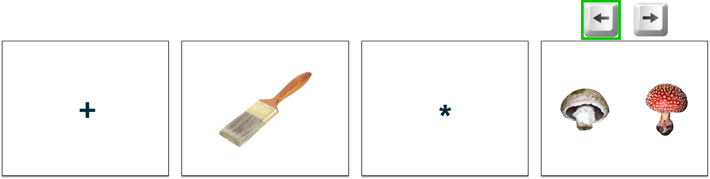

<!DOCTYPE html>
<html>
    <head>
        <title>Retrieve pilot experiment</title>
        <script src="jspsych-6.3.1/jspsych.js"></script>
        <link href="jspsych-6.3.1/css/jspsych.css" rel="stylesheet" type="text/css">
        <link rel="stylesheet" href="https://maxcdn.bootstrapcdn.com/bootstrap/4.0.0/css/bootstrap.min.css" integrity="sha384-Gn5384xqQ1aoWXA+058RXPxPg6fy4IWvTNh0E263XmFcJlSAwiGgFAW/dAiS6JXm" crossorigin="anonymous">        <script src="jspsych-6.3.1/plugins/jspsych-html-button-response.js"></script>
        <script src="jspsych-6.3.1/plugins/jspsych-image-keyboard-response.js"></script>
        <script src="jspsych-6.3.1/plugins/jspsych-instructions.js"></script>
        <script src="jspsych-6.3.1/plugins/jspsych-external-html.js"></script>
        <script src="jspsych-6.3.1/plugins/jspsych-preload.js"></script>
        <script src="jspsych-6.3.1/plugins/jspsych-fullscreen.js"></script>
        <script src="jspsych-6.3.1/plugins/jspsych-survey-text.js"></script>
        <script src="jspsych-6.3.1/plugins/jspsych-survey-multi-choice.js"></script>
    </head>
    <body></body>
    <script>

        var start_time = new Date();

        var exp_type = jsPsych.data.urlVariables().exp;

        var timeline = [];

        /********************** Instructions **********************/
        var start_ins = 'Welcome!<br><br>There will be <b>three</b> games to play in this experiment.<br><br>\
                                        The first will take 20 minutes, the second will take 15 minutes, and the last will take 11 minutes.<br><br>\
                                        It is important that you pay attention and try your best through each game!<br>\
                                        If you do well, you will be able to earn up to $[] in bonus pay beyond the usual rate.<br><br>';

        var practice_ins = '<br>You will first have the chance to practice this game to make sure you understand.<br><br>\
                            Once you have finished reading the instructions, please press <i>Next</i> to begin the practice.<br>\
                            After you have successfully completed the practice, you may begin the game.<br><br>';
        
        var training_ins = ['<br>Your first task is to <b>LEARN</b> and <b>REMEMBER</b> pairs of pictures!<br><br>\
	                        During the <b>LEARNING</b> part, you will see pairs of pictures presented on the screen. The pairs are made up of objects<br> paired with either an apple, shell, leaf, or rock. You should try your hardest to remember that the pictures go together.<br><br>\
                            You do not need to press any buttons while you are learning, just try to remember the pairs presented to you on the computer screen.<br> You will be pressing keys later, during the <b>REMEMBERING</b> part.<br><br>\
                            You might see multiple different objects paired with items of the same kind.<br> For example, you might see a paintbrush paired with a mushroom (left) and bucket paired with a different kind of mushroom (right).<br><br>\
                            <div class="row">\
                                <div class="col">\
                                    \
                                </div>\
                                <div class="col">\
                                    \
                                </div>\
                            </div><br><br>\
                            The best way that we’ve found for people to remember these pairs are to <b>create a story or phrase</b> relating the two objects.<br> It may help you to imagine the two items interacting. For example, you might imagine someone placing the red mushroom in the bucket.<br> Or, you might like to use words to help you remember the pair.<br> We will not ask you to tell us your story, so it can be as silly as you like! Just try to come up with something that helps you remember.<br><br>\
                            Each pair will be on the screen for <b>three and a half seconds</b>. A plus sign will appear for a short time, followed by another pair.<br> You do not need to do anything when the plus sign is on the screen; just wait for the next pair to appear.<br><br>',
                            
                            '<br>In the <b>REMEMBERING</b> part, your job is to show us how well you remember the pairs!<br><br> You will see one object on the top of the screen. You should pick which object on the bottom of the screen goes with the one on top.<br> Here is an example:<br><br>\
                            <br><br>\
                            To pick the picture on the left, press the left arrow key  and to pick the picture on the right, press the right arrow key .<br>\
                            In this example, we would press the <b>left arrow key</b> since we just learned that the paintbrush was paired with the brown mushroom.<br><br>\
                            Sometimes you will have to choose between objects of <b>different kinds</b>, like the mushroom and tree,<br> and sometimes you will choose between objects of the <b>same kind</b>, like two different mushrooms.<br><br>\
                            You will have only <b>one and a half seconds</b> to make your choice. Try to respond as fast as you can.<br> If you are unsure of the correct answer, that’s OK – just make your best guess.<br> After you make your response, we will show you which item was the correct choice.<br><br>\
                            You will see each pair once in a round of learning. After each <b>LEARNING</b> part, you will do a <b>REMEMBERING</b> part.<br> There will be 8 repetitions of learning and then remembering. Afterwards, there will be a final <b>REMEMBERING</b> game.<br><br>',
                            
                            '<br>After each <b>REMEMBERING</b> part, you will see a score screen with your game piece (rocket) at the bottom left.<br> Based on your progress through the games, your game piece will move closer toward Earth.<br><br>\
                            Your goal is to get to Earth before the games are over!<br>You will earn bonus money when you get to halfway ($[]) and when you reach Earth (a total of $[]).<br><br>\
                            <div style="position: relative; top: 0; left: 0;">\
                                \
                                \
                            </div></div><br><br>',
                            practice_ins
                            ];

        var train_test_ins = ['Great job!<br><br> You will now move on to the final <b>REMEMBERING</b> part of this game before continuing with the experiment.<br><br>\
                                For this <b>REMEMBERING</b> part, you will see different types of questions mixed together.<br>\
                                    You will either choose which of two pictures or which of two words go with the object on top.<br><br>\
                                For example, here are the different questions you would see for the paintbrush-mushroom pair:<br><br>\
                                <div class="row">\
                                    <div class="col">\
                                        \
                                    </div>\
                                    <div class="col">\
                                        \
                                    </div>\
                                    <div class="col">\
                                        \
                                    </div>\
                                </div><br><br>\
                                For the <b>left</b> and <b>middle</b> questions, you should pick the brown mushroom (left), since that was the mushroom paired with the paintbrush during learning.<br>\
                                 For the question on the <b>right</b>, you should pick “MUSHROOM” (right), since a mushroom was paired with the paintbrush during learning.<br><br>\
                                 For the question on the right, the words you will see in the actual game will be: <b>LEAF, APPLE, ROCK, </b>and <b>SHELL</b>.<br><br>\
                                There will be breaks in the game to show your score. Remember, your goal is to get to Earth before the games are over!<br><br>',

                                practice_ins
                            ];

        var retrieve1_ins = ['Good job on the <b>LEARNING & REMEMBERING</b> game!<br><br>\
                            Your next task will be to remember the pairs you just learned in another way.<br><br>\
                                For this <b>MEMORY</b> game, a cross will first appear on the screen.<br>\
                                 Then, you will be shown an object followed by a long delay with a star in the middle of the screen.<br>\
                                During this delay, try to remember the item that was paired with the object. <u>Try to think about the paired item and hold it in your mind</u>.<br><br>\
                            Then two item pictures or words will show up on the screen. Your job is to tell us which item was paired with the object.<br>Which item matches the one you were thinking about?<br><br>\
                            Here is an example of the screens you would see, one by one (left to right):<br><br>\
                            <br><br>\
                            For the last screen, if the item on the LEFT was paired with the object, press the left arrow key .<br>\
                             If the item on the RIGHT was paired with the object, press the right arrow key .<br>\
                                For this example, you should choose the left picture since the paintbrush was paired with the brown mushroom in the <b>LEARNING & REMEMBERING</b> game.<br><br>\
                                Try to respond as fast as you can. You only have <b>1 second</b> to respond once the items or words are shown.<br><br>',
                            
                            'There are <b>three possible questions</b> that may show up after the delay:<br><br>\
                             (1) You must choose which of two items of the <b>same kind</b> was paired with the object, for example two mushrooms,<br>\
                              (2) You must choose which of two pictures of <b>different kinds</b> was paired with the object, for example a mushroom and a tree; or <br>\
                               (3) You must choose which of two <b>words</b> describes the item paired with the object, for example “MUSHROOM” or “TREE”.<br><br>\
                               Here is an example of the three possible questions and correct responses for the paintbrush-mushroom pair:<br><br>\
                               <div class="row" style="display: flex; align-items:center;">\
                                    <div class="col">\
                                        \
                                    </div>\
                                    <span style="">OR</span>\
                                    <div class="col">\
                                        \
                                    </div>\
                                    <span>OR</span>\
                                    <div class="col">\
                                        \
                                    </div>\
                                </div><br><br>\
                            The green highlights the correct response in this example. In the actual game there will be no signal for which choice was correct.<br><br>\
                            There will be breaks in this game to show your score.<br><br>',

                            practice_ins
                            ];

        var goal_cue_names = ['blue triangle', 'green circle'];
        if (['5', '6', '7', '8'].includes(exp_type)) {
            goal_cue_names = ['green circle', 'blue triangle']
        }
        var goal_cue_ex = 'resources/img/instructions/r2_ex1_gr1-4.png';
        if (['5', '6', '7', '8'].includes(exp_type)) {
            goal_cue_ex = 'resources/img/instructions/r2_ex1_gr5-8.png';
        }
        var retrieve2_ins = ['<br>Good job on the <b>MEMORY</b> game!<br><br>\
                                For the last game, you will again be asked to remember the pairs you learned,<br> but this time you will be given a clue about the type of question you will be asked.<br><br>\
                                Like the previous <b>MEMORY</b> game, a cross will first appear on the screen and then an object.<br> Afterwards you will be shown either a <b>blue triangle</b> or a <b>green circle</b>, followed by a long delay.<br>\
                                    During this time, <u>try to remember the item that was paired with the object</u>.<br><br>\
                                If the shape shown after the object was a <b>'+goal_cue_names[0]+'</b>, you will have to choose between two items of the same type.<br>\
                                If the shape shown after the object was a <b>'+goal_cue_names[1]+'</b>, you will have to choose between two words describing the items.<br> Your job is to tell us which of the items was paired with the object!<br><br>\
                                Here are two examples of the screens you would see, one by one (left to right):<br><br>\
                                <br><br>\
                                If the item on the LEFT was paired with the object, press the left arrow key .<br>\
                                If the item on the RIGHT was paired with the object, press the right arrow key .<br><br>\
                                Try to respond as fast as you can. You only have <b>1 second</b> to respond once the items/words are shown.<br><br>',

                                '<br>You will first be quized on the question clues (triangle and circle) to make sure you understand.<br><br>\
                                Once you have finished reading the instructions, please press <i>Next</i> to begin the quiz.<br>\
                                After you have successfully completed the quiz, you may begin the practice and then the game.<br><br>'
                            ];
        
        var r2_practice_ins = '<br>You will next have the chance to practice this game to make sure you understand.<br><br>\
                            Please press <i>Next</i> to begin the practice.<br>\
                            After you have successfully completed the practice, you may begin the game.<br><br>';

        var reward_ins_final = ['Fantastic work!<br><br> Your final position is: ', 
                                '<br><br>You have almost completed the experiment. Now you will be directed to a brief survey on your experience.<br>\
                                 You will receive compensation only after completing the survey.<br><br>'];


        var retrieve2_goal = {
            type: 'image-keyboard-response',
            stimulus: 'resources/img/goal_cues/triangle.png',
            choices: jsPsych.ANY_KEYS,
            trial_duration: 1000,
            response_ends_trial: false
        }
        
        timeline.push(retrieve2_goal);

        jsPsych.init({
            timeline: timeline,
            preload_images: [],
            show_progress_bar: true,
            auto_update_progress_bar: false,
            message_progress_bar: '',
            on_close: function(){
                //send_data();
            }
        })

    </script>
</html>